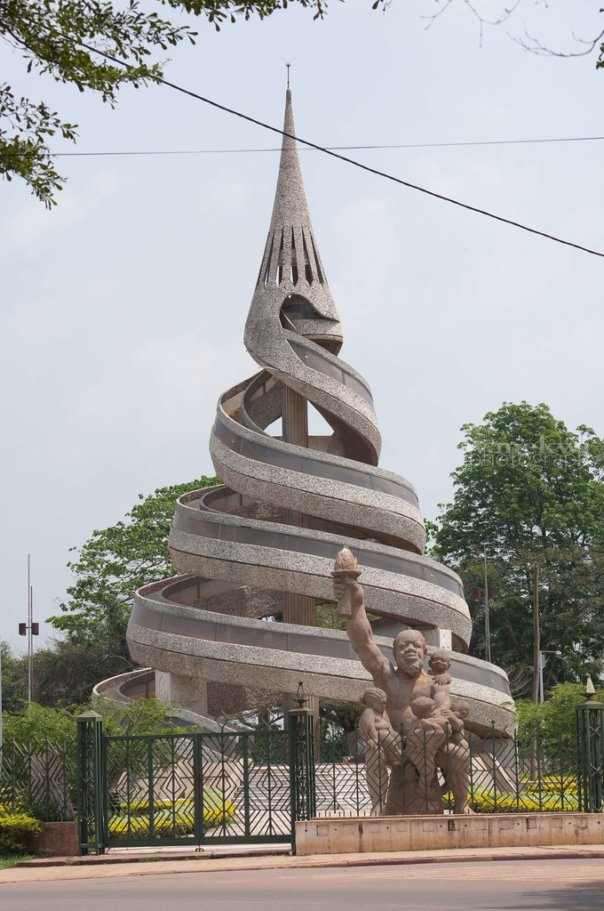
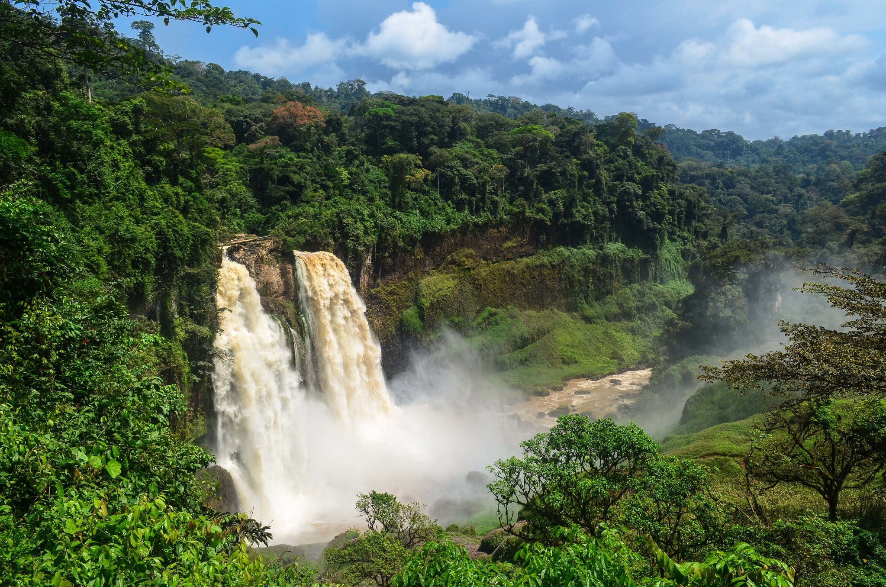
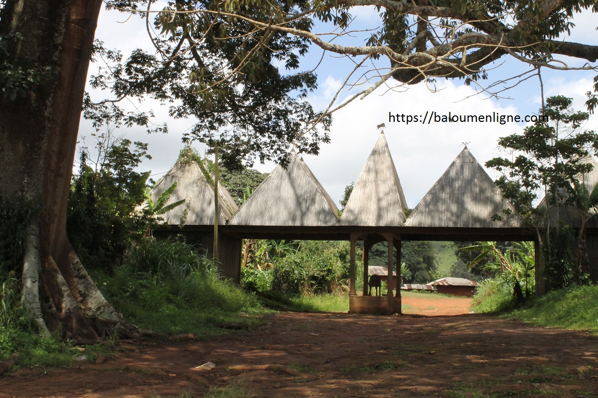

Origine
Le Cameroun, situé en Afrique centrale, est un pays riche en diversité culturelle et géographique. Yaoundé, la capitale politique du Cameroun, est une ville dynamique et verdoyante, nichée dans les collines du centre-sud du pays. Voici quelques informations sur cette région et la communauté de Baloum
 
